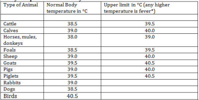
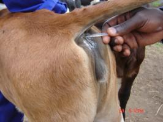
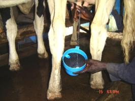
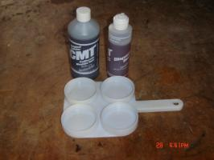
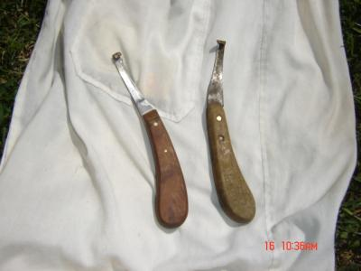
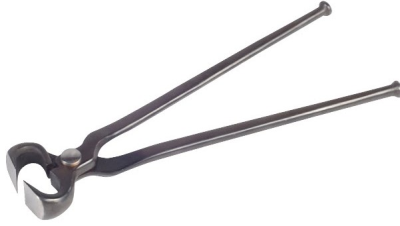
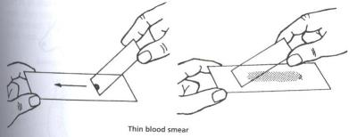
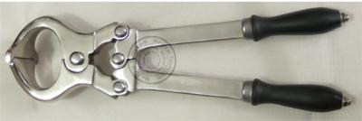
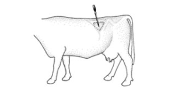
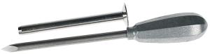

Tools for livestock care and treatment
{kind=link}
Introduction
Ticks and fleas have to be controlled so they do not spread diseases, worms and flukes have to be controlled so as not to eat the animals from inside and it is also important to take care that animals are happy and comfortable. It may not come as much of a surprise that animals respond to tender loving care by becoming more productive.
To take good care of animals, to diagnose if animals are diseased and to treat animals there are some tools that can be useful and practical to have within reach In the following some of the more common tools are listed which are widely available in Kenya and East Africa.
Important tools for good care of animals: Not all the mentioned tools are strictly necessary, but come in useful in emergencies or when the veterinarian is not available.
Thermometer - check body temperature
A thermometer is very useful to check body temperature. A veterinary thermometer is very cheap and can be found in most agro-vet shops. It is an essential tool for the serious livestock farmer to help her or him in judging animal health.
Normal body temperature varies a little bit during the day and according to climate, as can be seen in below table.
If the body temperature is significantly (<0.5-10C) higher or lower than indicated below, there is usually a problem to be solved.
|  |
| (c) Adapted from Blood Radostits Henderson
|
|  |
| Measuring the body temprature of an animal |
| (c) William Ayako, KARI Naivasha
|
Mastitis testing tools: Strip Cup and California Mastitis Test (CMT)
A strip cup is a very useful tool and a must for all dairy farmers. Milking the first few strips into a strip cup will show if there are any lumps present indicating beginning or advanced mastitis, which should be controlled urgently. It is a tool that should be in use in the milking parlour of every serious dairy farmer. If actual strip cups cannot be found, a normal cup with black plastic tied onto the top can be used instead. The main thing is to observe the quality of the first milk streaks when starting to milk.
|  |
| A farmer testing the udder for mastitis by using a strip cup. |
| (c) William Ayako, KARI Naivasha
|
A more efficient tool for early detection of mastitis is the California Mastitis Test (CMT). This test consists of a paddle with 4 cups, one for each quarter. Hold the handle in one hand (the handle representing the tail of the animal). Then milk a streak of milk from each quarter into the corresponding cup of the padddle (Front-Left, Front-Right, Hind-Left, Hind-Right) and remembering that the handle of the paddle points towards the tail of the cow. Next add a roughly equal or slightly higher volume of test solution from the CMT bottle and gently rotate the paddle to mix milk and test solution. (Please follow instructions on the CMT bottle for diluting the test solution to working strength before use). If the mix of milk and test solution stays liquid, the quarter is healthy. But if the mix shows varying degrees of stickiness or sliminess this is an indication of mastitis in the quarter where the milk came from. (That?s why it is important to remember which teat or quarter was stripped into which cup of the test paddle!)
California mastitis test kits are sometimes available from agro vet shops, but more often have to be ordered. Although affordable and very useful they are not yet widely used.
For larger farms, dairy processing enterprises and veterinary clinics there are (more expensive) electronic testers indicating the cows somatic cell count.
|  |
| California Mastitis testing kit |
| (c) William Ayako, KARI Naivasha |
Hoof trimming tools
In some areas and especially where the ground is soft, the hooves of animals grow faster than normal exercise can wear them down. Hoof trimming becomes necessary in order for the animal to be able to walk normally.The problem of overgrown hooves is particularly important for cows kept in zero grazing that do not exercise or walk on pasture at all. Also donkeys working on rough ground must be trimmed regularly to keep the hoofs in normal shape. Deformed hoofs makes normal walking difficult and painful for the animal. The legs may twist in different directions. The hooves become deformed and soft and prone to infections like foot rot. Overgrown long hooves are also dangerous for the udder because they may damage the teats when the cow stands up. An animal that only walks with difficulty and pain and has infected hooves has low animal welfare and cannot be a productive animal.
|  |
| Hoof trimming knives |
| (c) William Ayako, KARI Naivasha
|
Hoof trimming is however a specialized procedure and proper instructions and training from qualified livestock officers will be extremely useful for any livestock farmers. Offering hoof trimming as a paid service is a profession in Europe and could also become an income generating activity for keen young people who train on hoof trimming.
Hoof trimming knives are usually available from most well stocked agro veterinary shops but if not so, any good sharp knife can assist. In addition to hoof trimming knives professional hoof trimmers will also make use of more sophisticated tools like a hoof pincer (for clipping the dew claws), hoof shears (for cutting overgrown edge of the claw), toeing knife and a hoof rasp. Electric angle hoof grinders are available in Europe.
|  |
| A hoof pincer |
| (c) William Ayako, KARI Naivasha |
Glass slides for making blood smears
Blood samples are very useful for examining diseases in cattle. Many diseases such as ECF, Babesiosis and Anaplasmosis are caused by organisms which will show up under the microscopic in a good blood smear. Farmers only need glass slides, a needle or fine knife and a bit of training to make blood smears. Glass slides are available from pharmacies and from slme ago-vet shops, they are cheap and help in getting a diagnosis from a vet who does not even have to visit the farm. Treating a cow against the wrong disease will not only cost you the drug but also the value of the whole cow if it dies.
|  |
| 4. Glass slides for making blood smears |
| (c) William Ayako, KARI Naivasha
|
Other useful tools
- Bandages and clean cloths for cleaning wounds and covering them and for holding broken legs in place
- Bottle for giving medicine by mouth. If a glass bottle is used, it is useful to put a rubber tube over the end to stop it breaking
- Container for sterilizing equipment. A cooking pot with a lid will do. Sterilize equipment by boiling it in water
- A sharp knife or scalpel. Scalpels have sterile blades that can be thrown away after use
- Pen and notebook for keeping records
- Rope. Ropes are essential for any livestock keeper! They are very useful for tying up animals, for making halters to lead animals during transport; fine clean ropes (sterilised in boiling water) can also be useful when assisting a cow with difficult birth
- Soap or soap flakes - for washing hands and arms and for washing the cows rear end when assisting with difficult births
- Syringes and needles for injection. With the very great distance between vets, skilled farmers can learn to do basic treatment before the vet is called. Most useful sizes are 10ml, 20ml, and 50ml. Some syringes can be boiled to sterilize them for reuse - others cannot be boiled so need to be thrown away after use
- A syringe without needle is useful for measuring liquids such as dewormers or medicines given by mouth, and for flushing wounds and abscesses
- Castration rings - mostly for goats and sheep but can also be used for small new born calves
|  |
| Burdizzo Castration Forceps 14" |
|
|
- A Burdizzo castrator (no blood) is the best and cleanest tool for castrating bulls, rams and bucks - farmers can share in the costs of buying this tool from an agro-vet shop; two different sizes are available (14" for bulls and a smaller size for sheep and goats). The Burdizzo should be used on the young animal. There are Burdizzos for animals of different sizes. You should always remember that the Burdizzo is a valuable instrument and keep it clean and oiled. Do not drop it.
- Needles and stitching material (thread = suture) for stitching wounds.
- Tape measure for measuring animals to estimate their weight. When treating animals it is very important to know the approximate body weight in order to give correct dosage of medicine
- A Trocar for making a hole into the rumen to treat serious cases of bloat. Trocars come in two sizes, for cattle and for sheep.
|  |
| Use of a Trocar |
| (c) William Ayako, KARI Naivasha
|
The trocar has an inside tube or canula, which is left in the wound and anti-bloat medicine (?Stop Bloat?) can be directly administered through this tube/canula into the stomach. Even a sharp knife can be used in emergencies where animals are close to dying.
|  |
| A Bloat Trocar |
|
|
Review Process
January 2013: Draft by Infonet- Biovision
May 2013: Review by Dr Mario Younan (DVM, PhD),Regional Technical Advisor for VSF-Germany. working in East Africa since 1995
June 2013: Gidi Smolders
Index Information Source Links
- Blood, D-C.,Radostits, O.M. and Henderson, J.A. (1983) Veterinary Medicine - A textbook of the Diseases of Cattle, Sheep, Goats and Horses. Sixth Edition - Bailliere Tindall London. ISBN: 0702012866
- Forse, Bill: Where there is no vet